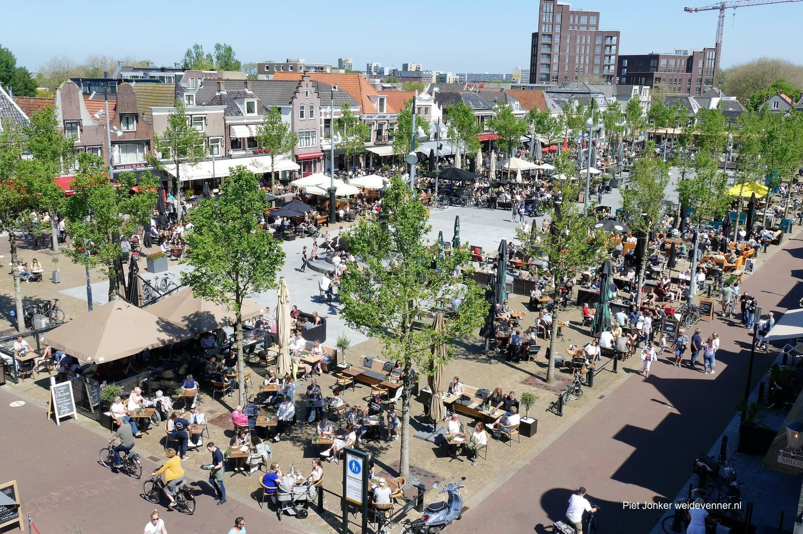

De Koemarkt
 De Koemarkt in Purmerend. Voor velen een begrip om in het weekend uit te gaan, voor anderen dé plek om lekker een hapje te eten en te genieten bij de diverse horecagelegenheden op het plein. En we zijn weer open! U kunt dan dus ook heerlijk plaatsnemen op het ruime terras, en bij wat minder weer onder onze heaters! Ook zijn de evenementen weer gepland, kijk hier voor het overzicht. Tevens is belangrijk te melden dat de winkels ook op zondag geopend zijn! Dus een bakje koffie, lunch of diner nuttigt u tijdens of na uw winkelbezoek op de Koemarkt! De Koemarkt, een divers en prachtig plein met voor ieder wat wils!